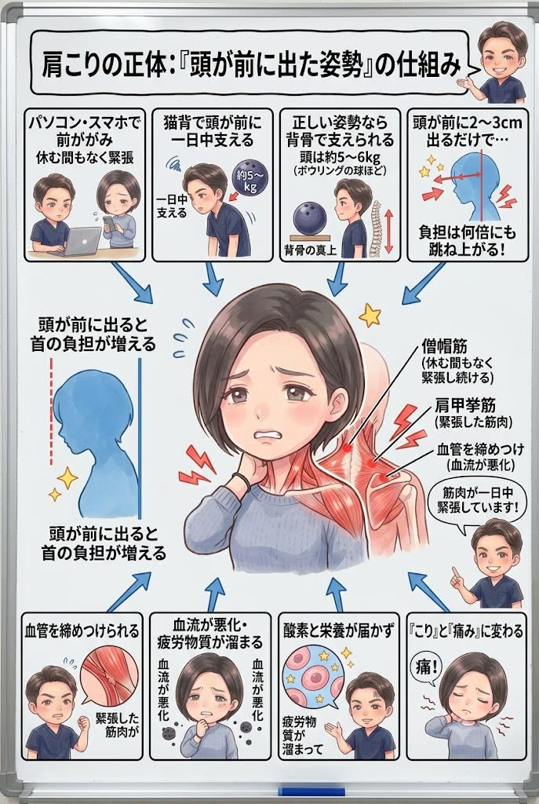

「揉んでもらった直後はラクなのに、数日で元通り」——それは、肩こりの原因がまだ残っているサイン。なぜあなたの肩こりが治らないのか、筋肉のレベルまで掘り下げてお話しします。

肩こりの正体は、首から肩・肩甲骨につく筋肉（僧帽筋・肩甲挙筋など）が、休む間もなく緊張し続けている状態です。緊張した筋肉は血管を締めつけ、血流が悪化。酸素と栄養が届かず、疲労物質が溜まって「こり」と「痛み」に変わります。
ではなぜ、その筋肉が緊張し続けるのか。犯人は「頭が前に出た姿勢」です。人の頭は約5〜6kg（ボウリングの球ほど）。正しい姿勢なら背骨の真上で支えられますが、パソコン・スマホ・猫背で頭が前に出ると、その重さを首の後ろの筋肉だけで一日中支えることになります。頭が前に2〜3cm出るだけで、首肩の筋肉にかかる負担は何倍にも跳ね上がるのです。

そして、頭が前に出る根っこには猫背、さらにその土台の骨盤の後傾があります。骨盤が後ろに倒れると背骨は丸まり、頭は自然と前へ。つまり肩こりの原因は、首や肩そのものではなく「姿勢の連鎖」の最後に肩へ出た結果であることが非常に多いのです。だから、肩だけを揉んでも戻ります。

「姿勢を意識しましょう」——よく言われますよね。でも、少しだけ考えてみてください。意識しただけで、筋肉はつくでしょうか？ 意識しただけで、痩せられるでしょうか？ 姿勢もこれと同じで、残念ながら、意識だけでは変わらないんです。決してあなたの努力が足りないわけではありません。
意識して背筋を伸ばせるのは、その瞬間だけ。硬く縮んだ筋肉と崩れた姿勢がそのままだと、意識だけで良い姿勢を保ち続けるのは、誰にとってもとても難しいことなんです。
では、どうすればいいのか。答えはひとつです。体の仕組みと原因を突き止め、その体に合った具体的な施術と姿勢改善メニューを「継続」する。これに尽きます。 ダイエットが食事メニューの継続で、トレーニングが筋トレメニューの継続で結果を出すのと、まったく同じ。意識やその場しのぎではなく、原因に合った正しいことを、続ける——それだけが、肩こりから本当に卒業する道です。
正直にお話しします。原因である姿勢や骨盤・深部の筋肉へのアプローチは、必ずしも“気持ちいい場所”への施術ではありません。でもそれこそが、繰り返す肩こりを根本から変えるために本当に必要な一手です。とはいえ、今つらい首・肩の張りを我慢してもらうつもりはありません。「今のつらさへの対応」と「原因への一手」を、必ずセットで行います。気持ちいいマッサージ“だけ”で終われば、それは対症療法。その場は楽でも、原因が残っている限りまた戻ってきてしまうからです。
原因は、あなたの体そのものではなくあなたの“生活”の中にあります。どんな机で、どんな腕の置き方で、どれだけスマホを見て、どんな枕で寝ているか——この生活習慣そのものに、根本改善のカギがあります。だから当院は、症状だけでなくあなたの生活そのものをとことん深くお聞きし、原因が潜む習慣にメスを入れます。ここまで踏み込む接骨院・整体は多くありません。これが当院の考える“本当の根本治療”です。
ボキボキが苦手・怖い方へ。刺激の少ないやさしい矯正で、無理なく整えます。お子さまやご年配の方にも安心です。
「ボキボキしてスッキリしたい」「あの爽快感が好き」という方へ。しっかり音の鳴るダイナミックな矯正も、当院の得意技です。
「ボキボキしてくれる整体を探していた」という方も、ぜひご相談ください。ご希望とお身体の状態に合わせて、最適な方をお選びいただけます。
今つらい僧帽筋・肩甲挙筋などの緊張を丁寧に緩め、血流を回復させて「今のつらさ」を軽くします。
猫背矯正・骨盤矯正・肩甲骨はがしで、頭が背骨の真上に乗る姿勢へ。首肩の筋肉が頑張らなくていい身体をつくります。
ここを整えることが、再発を防ぐいちばんのカギ。机・モニター・スマホの高さ、枕、こまめなセルフケアまで、あなたの生活に合わせて具体的にお伝えし、継続をサポートします。

いつから・どんな時につらいのか、お仕事や生活習慣まで丁寧に伺います。肩こりの原因は人によって全く違うため、ここに一番時間をかけます。

姿勢分析で頭の位置・骨盤の傾き・肩甲骨の動きをチェックし、あなたの肩こりの“設計図”をわかりやすくご説明します。

筋肉をゆるめてから姿勢を矯正。ご自宅でできるセルフケアとデスク環境のアドバイスまでお伝えします。
マッサージは硬くなった筋肉を一時的にほぐすだけで、原因＝頭が前に出る姿勢や猫背・骨盤の崩れが残っているからです。原因がある限り数日でまた緊張し、戻ります。当院は原因の姿勢と筋肉バランスから整えるので戻りにくいのが特徴です。
慢性的な肩こりは保険適用外のため、自費メニューでのご案内になります。寝違えなど急性の痛みは保険が使える場合がありますので、カウンセリング時にご確認ください。
はい。ボキボキしないソフト矯正と、しっかり音の鳴るダイナミック矯正（ボキボキ）の両方をご用意しています。苦手な方はソフト矯正で無理なく整えますのでご安心ください。
個人差はありますが、初期は週1〜2回の集中ケアで変化を定着させ、その後2週間〜1ヶ月に1回のメンテナンスへ移行する方が多いです。初回の検査で目安の計画をご提案します。